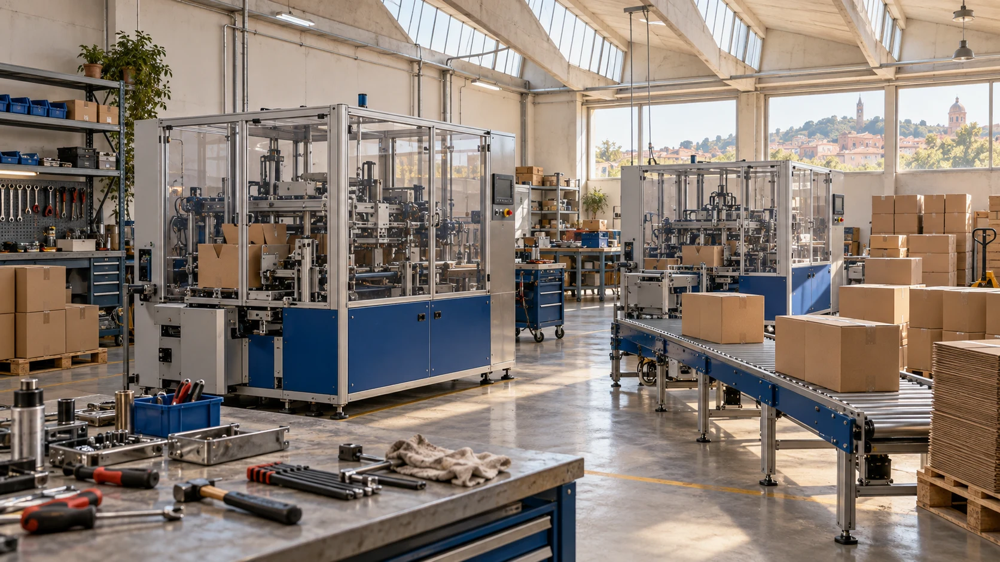

Start at the sealing bench
The family workshop begins with carton sealers and practical service work for local manufacturers.
Our company
Merek Packworks is a family-owned manufacturer in Bologna. Since 2006, our work has centred on the practical end of carton packing.

Bologna / 58 people
Mechanical assembly, machine trials and support share the same workshop. That keeps the team who set the machine close to the people writing its format and maintenance records.
We serve independent manufacturers and regional packing operations that want a useful step in automation, with room to retain the parts of their line that already work.
How the range took shape
The family workshop begins with carton sealers and practical service work for local manufacturers.
Compact erector development focuses on bringing open cases to manual packing teams without redesigning the whole floor.
Format sheets and wear-part records become the common language between the Bologna team and regional integration partners.
Local knowledge, shared documentation
Italy is our home market. In Austria, France, Germany and Slovenia, projects are scoped with integration partners who coordinate the local installation.
Country coverage does not mean an automatic service commitment. The site responsibilities, language of documentation and support arrangement are agreed before quotation.
Who you work with
Matches the carton range and packing operation to the E200, S40 or Link.
Tests the agreed samples and records settings and open questions.
Organises the machine documents, wear-part references and partner handover.
Start with the carton
Your case sizes, target rate and available space are a better starting point than a machine catalogue.
Assess your line A local planning demo. No request is sent.